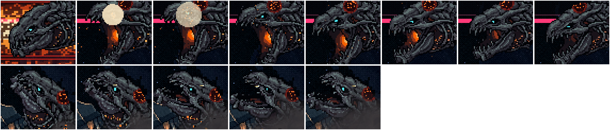
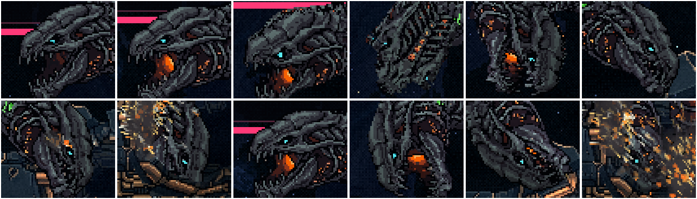
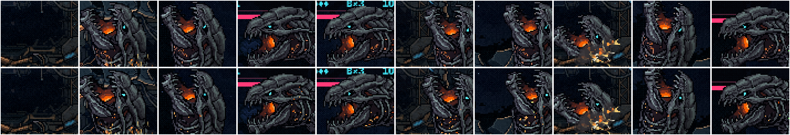
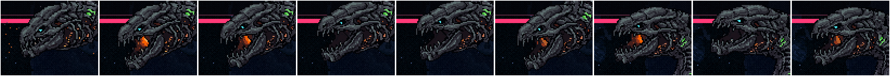
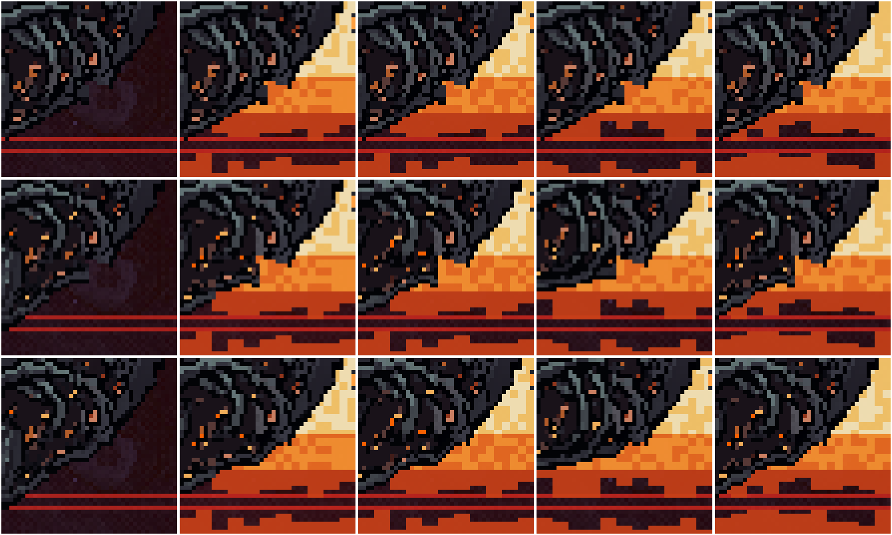
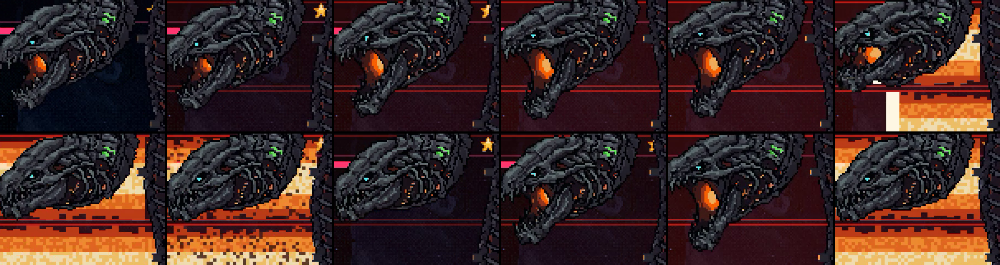
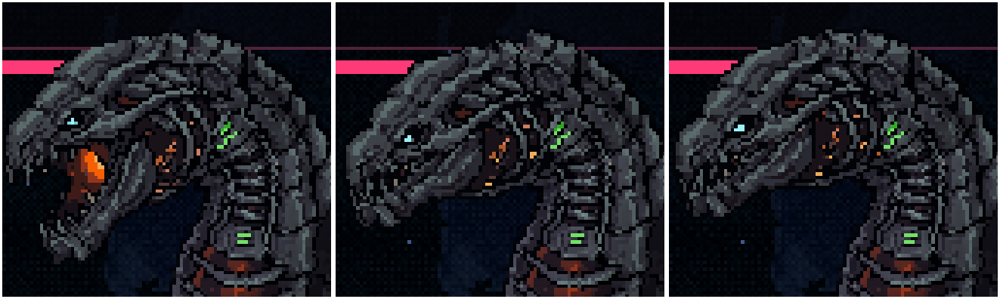
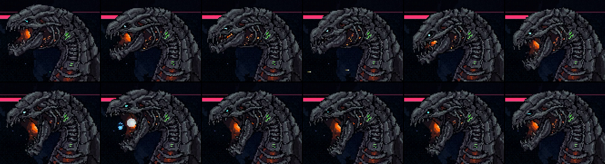
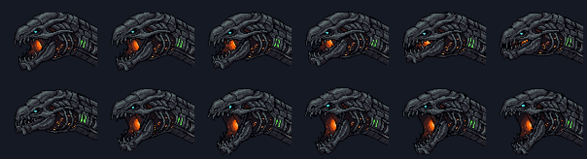

A enguia colossal: os gestos da cabeça
07/11/2026 · START plans/2026-11-07-enguia-animacoes-START.md, etapa 3 · instalado na maquete, fora do jogo · os 6 gestos e os mergulhos, todos aprovados
Gestos 5 e 6: o grito da mordida e a agonia da presa ✅ aprovados
Os dois estados de boca que faltavam, um para cada momento:
- A mordida no crânio (aos 5%): o GRITO. Ela é mordida durante o fogo da última rodada de canos, de boca fechada. A boca explode num grito mudo, escancarado de golpe (0,1 s), e segura assim com um tranco da cabeça e um tremor. Depois volta pelo escancarar do Eco até a E3 e emenda no sibilo da preparação, então o mergulho que vem a seguir sai como você aprovou. A ferida no crânio aparece no mesmo instante, como já era.
- Presa no rombo (a morte): a AGONIA. Ela chega da descida de boca fechada e, presa e tombada de lado, as mandíbulas caem abertas e frouxas (0,7 s) enquanto a brasa da goela se apaga. Fica assim até a cabeça explodir.
A mordida, com a câmera na cabeça (88,0 a 90,3 s). À esquerda, antes; à direita, agora.
A presa, com a câmera na cabeça (101,8 a 104,4 s), até a explosão. À esquerda, antes; à direita, agora.
A cena inteira em volta da mordida (87,0 a 94,6 s): o fogo, a mordida, o grito, o sibilo e o mergulho. À esquerda, antes; à direita, agora.
A cena inteira da morte (100,5 a 105,5 s). À esquerda, antes; à direita, agora.

Em cima, a mordida: fechada no fogo → mordida (o clarão da mordida) → o grito → segurando, com a ferida → voltando → o sibilo → o mergulho. Embaixo, a presa: fechada → as mandíbulas caindo → frouxa e apagada.
O que foi descartado antes de te mostrar
- O grito: as duas versões pintaram riscos de "ferimento" no 1º quadro, e uma delas ainda soltava faíscas. Usei a outra, do 2º quadro em diante: a boca escancara de golpe, como pede o susto.
- A agonia: uma das versões derramava a brasa pela boca como líquido laranja. Ficou a que apaga a goela.
Para você decidir
- O grito na mordida e a agonia na presa servem?
- Com eles, as 6 animações da cabeça estão completas. Depois vem a Parte B do plano: os efeitos do corpo e a instalação no jogo.
Rodada 2 do nadar: a boca fecha nos mergulhos (o seu pedido) ✅ aprovada
Nas três descidas em direção ao rombo (o mergulho do posto, o afundar antes de passar por baixo do casco e o afundar da morte), ela agora fecha a boca no meio da descida e entra no rombo de boca fechada:
- No começo: o sibilo da preparação se desfaz e a boca volta à E3 (a mesma volta que você aprovou).
- No meio da descida (a 45% do tempo em que a cabeça está à vista): a boca fecha em 0,4 s, com os quadros do fechar do Eco, e segue fechada.
O mergulho do posto rola no meio da descida, e as vistas do rolar eram feitas só da E3 (de boca entreaberta). Por isso cada quadro do fechar ganhou as próprias vistas do rolar, pelo mesmo método, e a boca fecha enquanto ela vira, sem abrir. Durante as descidas a respiração não entra.
A câmera segue a cabeça, na velocidade real: o mergulho do posto (19,7 s), o afundar (33,2 s) e o afundar da morte (101,3 s). À esquerda, antes; à direita, agora.

Os 8 primeiros, no mergulho do posto: o sibilo → a E3 → rolando → fechando no rolar → fechada. Os 4 últimos, no afundar: o sibilo se desfazendo → a E3 → fechando → fechada entrando no rombo.
Gesto 4, o nadar: a respiração ✅ aprovada
É o estado de sempre, quando ela nada à vista entre as habilidades. A boca respira: a mandíbula desce e sobe um pouco, devagar, e a cabeça fica firme. É discreta de propósito, porque é o que mais se repete.
- Cada respiração sai da E3 e volta a ela. O rolar usa vistas feitas a partir da E3, e os outros gestos também começam nela. Assim a boca nunca pula na troca.
- Os trechos em que ela nada de perfil e à vista são curtos (o maior tem 2,3 s), então cada respiração dura o que couber antes da próxima virada ou do próximo gesto, de 0,8 a 2,4 s. Na luta são 11: na chegada, subindo para o posto, erguida antes do Eco, na volta e afundando para a morte.
A câmera segue a cabeça, na velocidade real, em cinco respirações (2,0 s, 8,7 s, 27,1 s, 42,5 s, 62,8 s). À esquerda, antes (a E3 parada); à direita, agora.
A cena inteira, seis trechos com respiração emendados. À esquerda, antes; à direita, agora.

Dez instantes de respiração, a câmera na cabeça. Em cima, antes; embaixo, agora.
O que foi descartado antes de te mostrar
- Pedir que a brasa "pulsasse" fez o gerador pintar pontinhos amarelos na couraça e um anel em volta do olho. Pedir "sem faíscas" pintou faíscas voando. A versão usada descreve só a mandíbula; dois quadros dela tinham uma estrela de faísca no topo do crânio, apagada com os pixels do quadro vizinho limpo.
Para você decidir
- A respiração está no ponto, discreta demais ou forte demais?
Gesto 3, a preparação: o sibilo antes de partir ✅ aprovado
Nos 0,6 s em que ela recua antes de partir (a inclinação para cima continua), a boca faz um sibilo, como serpente prestes a dar o bote: as mandíbulas ficam tensas e só entreabertas, todos os dentes à mostra, e a brasa da goela se apaga até ficar escura. É um estado de boca que nenhum outro gesto tem: entreaberta e apagada. Quando ela parte, a boca volta à E3 em 0,35 s.
Aparece em dois pontos: no posto, depois dos canos, antes do mergulho, e no rombo, depois do Eco, antes de descer para baixo do casco. A 3ª preparação é com ela escondida e não tem cabeça à vista.
No posto (18,5 a 21,7 s): o fim dos canos, o sibilo e a partida para o mergulho. À esquerda, antes; à direita, agora.
No rombo (32,8 a 35,4 s): depois do Eco, o sibilo e a descida. À esquerda, antes; à direita, agora.

Os 6 primeiros quadros, no posto: a boca fechada do fim dos canos → de volta à E3 → o sibilo apagando → a partida. Os 3 últimos, no rombo.
Um ajuste nos canos, para emendar
A preparação começa no instante em que os canos terminam, e a volta da boca fechada para a E3 caía depois do fim. Ela agora acontece nos últimos 0,4 s da brasa da 3ª salva, e o sibilo começa da E3. O resto dos canos, que você aprovou, ficou igual.
Para você decidir
- O sibilo como a boca da preparação (entreaberta, dentes à mostra, a brasa apagando)?
Os vãos na junta (o seu apontamento, em todos os gestos) ✅
A causa: embaixo da junta, entre a garganta e o pescoço, o fundo da cena aparecia por um bolsão. Ele vinha de duas coisas somadas. A garganta dos quadros gerados não segue a mesma linha da E3 até a junta. E a cabeça gira em relação ao pescoço (o tranco dos canos, o giro do Eco), o que abre uma cunha embaixo. Com a E3 parada o vão também existia, só que menor.
A correção é no desenho, e vale para todo gesto e toda pose: depois de pintar o crânio e a pele, qualquer pixel do fundo perto da junta (até 24 px) que fique preso entre partes dela, a até 3 px de cada lado, recebe a cor do contorno ou da garganta vizinha. Os vãos perto da junta caíram de cerca de 4.000 px para 67 px no trecho dos canos e do 1º Eco. A luta não mudou.

A junta por baixo, na batida dos canos (cinco instantes). Em cima, a E3 parada; no meio, o gesto com o bolsão; embaixo, com o selo. Os vídeos e as imagens desta folha já são desta rodada.
Gesto 2, os canos: a boca abre com a carga e bate fechada no fogo ✅ aprovado
Para a boca variar em relação ao Eco, o ritmo é o inverso dele. Em cada uma das 3 salvas:
- O aviso (1,8 → 1,1 → 0,7 s): a boca vai abrindo devagar e a goela clareia, como pressão subindo. O tremor que já existia continua.
- O fogo: as mandíbulas batem fechadas de golpe (0,1 s) e a cabeça dá um tranco curto para trás. Ela segura a boca fechada durante a queima e a pausa.
- A salva seguinte reabre a partir da boca fechada. Depois da 3ª, ela volta à entreaberta da E3.
A boca fechada é a mesma do Eco, já aprovada. A sonda que desvia segue com 0 toques.
A cabeça ampliada, na velocidade real, no 1º posto dos canos (11,5 a 21 s). À esquerda, antes (a E3 parada); à direita, agora.
A cena inteira, o mesmo trecho. À esquerda, antes; à direita, agora.

Tirados do vídeo: a carga da 1ª salva abrindo → carregada → a batida → fechada no fogo → reabrindo na 2ª → carregada → fechada no fogo.
O que foi corrigido antes de te mostrar
- A nuca, como no Eco: cada quadro recolado pela nuca (a mesma correção do degrau).
- A garganta: na boca carregada, o gerador baixou a parte de baixo da cabeça inteira em 9–10 px, e atrás da mandíbula aparecia um corte reto, onde a pele do pescoço não alcançava. Perto da junta, a base de cada quadro foi comprimida até a linha da E3, e a mandíbula agora pende a partir da articulação. Os quadros do Eco não pendem e saíram idênticos (conferido byte a byte).
- A batida: as duas gerações do "bater" deixavam a cabeça fechada arredondada e sem os dentes. A batida usa os 2 quadros do meio de uma delas e termina na boca fechada do Eco.
Para você decidir
- O ritmo: abrir na carga e bater no fogo, ou prefere outro?
- O tranco no fogo (0,12 rad, mais leve que o do cuspe): no ponto, forte ou fraco?
Rodada 2 do Eco: o degrau no topo da cabeça (o seu apontamento)
A causa: o gesto inclina a cabeça. Ao fechar a boca, o gerador abaixou o focinho em 4,5 px e a nuca em 2,6 px; ao escancarar, ergueu os dois. Como a pele do pescoço fica na altura da E3, na boca fechada ela ficava 3 px acima do crânio e formava o degrau.
A correção: cada quadro foi recolado pela nuca, inteiro e rígido (os pixels e as normais juntos), até a nuca bater com a da E3. A inclinação continua, porque o focinho ainda abaixa ao fechar e sobe ao escancarar, mas a junta encontra a pele. A 1ª tentativa, que puxava só a parte de trás, trocava o degrau por uma corcova e foi descartada. A E3 não mudou, e os quadros gerados ficaram guardados em eco/original/.

O mesmo instante (a leitura, com a boca fechada). À esquerda, a E3 parada; no meio, o degrau; à direita, corrigido: a mesma cúpula lisa da E3. Os vídeos e as imagens abaixo já são desta rodada.
O Eco: a boca fecha para ler a nave e escancara no cuspe ✅ aprovado
A boca da E3 aprovada é entreaberta. No Eco ela passa por três estados, um em cada parte da habilidade:
- Lendo a nave (2 s): a boca fecha em 0,5 s e fica de dentes cerrados, enquanto o olho acende e a cabeça segue a nave (o giro que já existia).
- O cuspe: a boca abre de estalo, em 0,17 s, e fica escancarada, com a goela acesa, durante o tranco. As sementes e o clarão saem da goela do quadro escancarado.
- Depois: a boca volta devagar (0,6 s) para a entreaberta da E3.
A coreografia, o giro, o tranco e os tempos do Eco não mudaram. A sonda que desvia segue com 0 toques.
A cabeça ampliada, na velocidade real, no 1º Eco (27,5 a 34 s). À esquerda, antes (a E3 parada); à direita, agora.
A cena inteira, o mesmo trecho. À esquerda, antes; à direita, agora.

Tirados do vídeo, em ordem: entreaberta → fechando → fechada (lendo) → o estalo → o clarão → escancarada → voltando.

Os 12 quadros. Em cima: a E3 e o fechar (1 a 6). Embaixo: o escancarar (7 a 11). O estalo usa os intermediários reais: o fechar de trás para a frente até a E3, depois o escancarar (6 → 4 → 2 → E3 → 9 → 11).
Para você decidir
- Os estados da boca: fechada lendo, escancarada no cuspe. Ou prefere outro par (entreaberta lendo, por exemplo)?
- Os tempos: fecha em 0,5 s, estala em 0,17 s, fica aberta por 0,55 s, volta em 0,6 s. Estão na velocidade certa?
Como foi feito e o que foi medido
- Todo gesto cai de perfil. Medido na luta inteira (
scripts/_serpente/_enguia-gestos-medir.mjs): o Eco, os canos, as preparações visíveis, a mordida no crânio e a presa acontecem com o rolar em 0°, sem espelho. Nenhum gesto disputa com as vistas do rolar. Só o nadar passa 1,7 s de 24 s fora do perfil. - A geração: PixMiniMax a partir da E3, 2 versões por clipe, com o pedido dizendo a cor de cada luz e "nothing comes out of the mouth". Escolhi o fechar que segura os dentes (o outro fechava mais, mas arredondava o focinho e perdia o "Alien") e o escancarar que menos mexe a cabeça. O intermediário pedido com as duas pontas fixas não fez intermediário (pulou direto, 71% do desenho num quadro só) e ficou de fora.
- A luz: as normais dos 12 quadros saíram de uma só chamada do PixelLab, planejadas juntas. As da E3 vieram idênticas às aprovadas (0,0° de diferença), então a luz não salta quando o gesto começa.
- A junta do pescoço sai no máximo 1,2 px do lugar (abaixo dos 6 px em que o crânio cobre a pele), e o brilho de cada quadro fica entre 95% e 101% da E3: nenhum quadro escurece.
Os próximos gestos, na ordem do START
Os canos (a carga, hoje um tremor de ±1 px) → a preparação (o recuo antes de partir) → o nadar → a mordida no crânio → a presa no rombo.